FH Engineering presents....
|
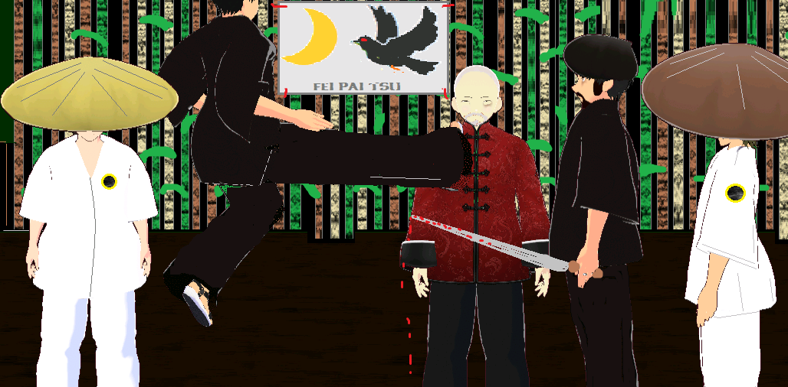
FEI PAI TSU
2026 - Moonshee Publishing Momotaro Studios
This is a whole new universe based 1000 c.e., Hong Kong, Southern Canton. It stars brand new cast of characters and is adventure with some action. Rated PG. Made as part of the dev.to June 2026 contest!
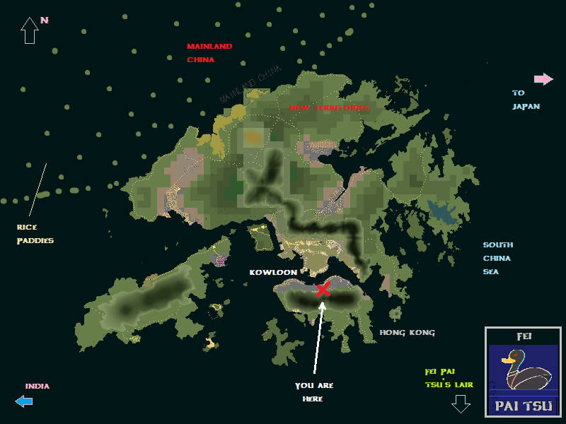
Setting: Summer Solstice Festival, 1000 c.e. The village fortune teller also is predicting a full solar eclipse to coincide with the festival, an ominous sign to many fearful villagers. The fortune teller has also been spreading strange tales in the area regarding crystals and dreams along with messages from ghosts or strange figures she communicates with via crystals like agates. For example, there is a legendary bird named FEI PAI TSU who is believed to arise during eclipses and take revenge on the villagers and country folks. This bird blocks the sun because it's so big and scary. Hence, the eclipse. This Jahr, with the eclipse and solar maximum coinciding, some religious folks were praying non-stop at the temples.
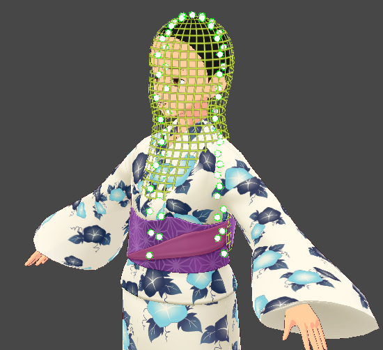
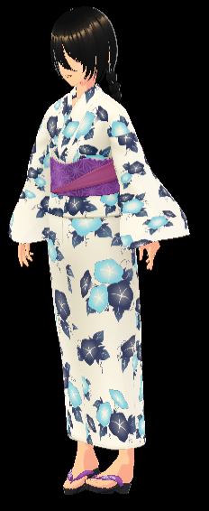
FORTUNE TELLER
Many of her messages that she spreads around the village especially at festival time come from dreams, she does not scry too much. Rather, she simply carries her crystals in bracelets, necklaces or pocket stones. She is bullied because her friend is lgb and she does not regulary attend religious rituals. She operates a fortune-telling booth at the Summer Solstice Festival and it was already rousted by hooligans.
Many of her messages that she spreads around the village especially at festival time come from dreams, she does not scry too much. Rather, she simply carries her crystals in bracelets, necklaces or pocket stones. She is bullied because her friend is lgb and she does not regulary attend religious rituals. She operates a fortune-telling booth at the Summer Solstice Festival and it was already rousted by hooligans.
|
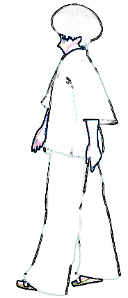 | RIVAL In this game enemies include rival dojo members. This fellow's name is ROBU and he is extremely dangerous and a wastrel to boot. He does not support his wife and child but instead spends most of his time gambling and visiting brothels along with other skullduggery. |
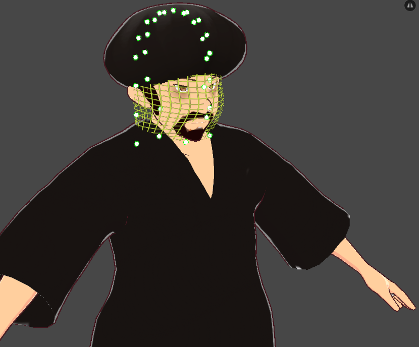
He is the member, along with Tomayo and many others, of a rival dojo which is very religious and does not tolerate certain things like vegetarians or lgb. They are very violent and may fairly be considered bullies. They love to brawl and they operate a butcher shop in the village. Our protagonists live in a dojo outside of the village near the bamboo forests and they grow vegetables and melons along with fruits and the regular assortment of garden items.
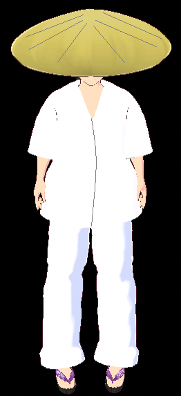
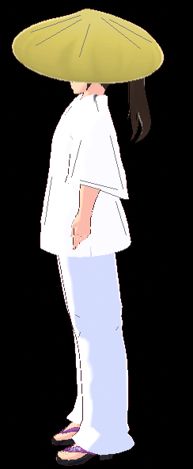
YUMI-SAN
This is the notorious and on-and-off girlfriend of Chin-san. A nympho and already for fun, she has dated a lot of guys at the dojo. She is the first female pupil allowed at the dojo in recent memory and her beauty has made her very popular along with her easy ways and fondness for skinny dipping and dirty dancing with guys. She dresses to show a lot of skin and whenever guys ask her out to the inn for a drink she gladly accepts.
|
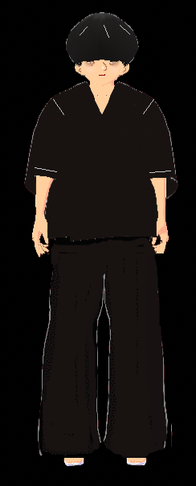 | RIVAL Here is another rival dojo bully. These guys date the fortune teller, according to them, and they do not like Chin-san hanging out with her or getting messages from a future ghost called Alan Turing who is some type of wizard. Turing, a foreigner, claims he uses sundials to drive rice mills and also pump out rice paddies. This claim he makes to the fortune teller through dream states or crystal technology and the fortune teller relays his messages to select clients in the village and surrounding area. Some are fearful and call it devil worship, they do not like crystals or sundials, ghosts, lgb. They are very religious and do as their senseis tell them. |
SUMMARY:
We have two games for everyone to play. One game is the full version and it requires Windows 32 bit run it. The other game is a lite version and streams via HTML to your browser, no download needed. It is like a demo version, best for mobile devices and people who do not have PC devices like laptop or IBM Watson.
The game is made with AGS and the lite version is HTML and suitable for almost any device like Apple or Android. This game will probably appeal to adventure fans and not necessarily to fans of Mortal Kombat because it is not an action game, it is more adventure with some action. Not many puzzles, there is a walkthru. It is a compact game and yet can be quite time-consuming to explore all aspects and players can get stuck especially if they do not use the magic option in the main menu.
We have two games for everyone to play. One game is the full version and it requires Windows 32 bit run it. The other game is a lite version and streams via HTML to your browser, no download needed. It is like a demo version, best for mobile devices and people who do not have PC devices like laptop or IBM Watson.
The game is made with AGS and the lite version is HTML and suitable for almost any device like Apple or Android. This game will probably appeal to adventure fans and not necessarily to fans of Mortal Kombat because it is not an action game, it is more adventure with some action. Not many puzzles, there is a walkthru. It is a compact game and yet can be quite time-consuming to explore all aspects and players can get stuck especially if they do not use the magic option in the main menu.
|
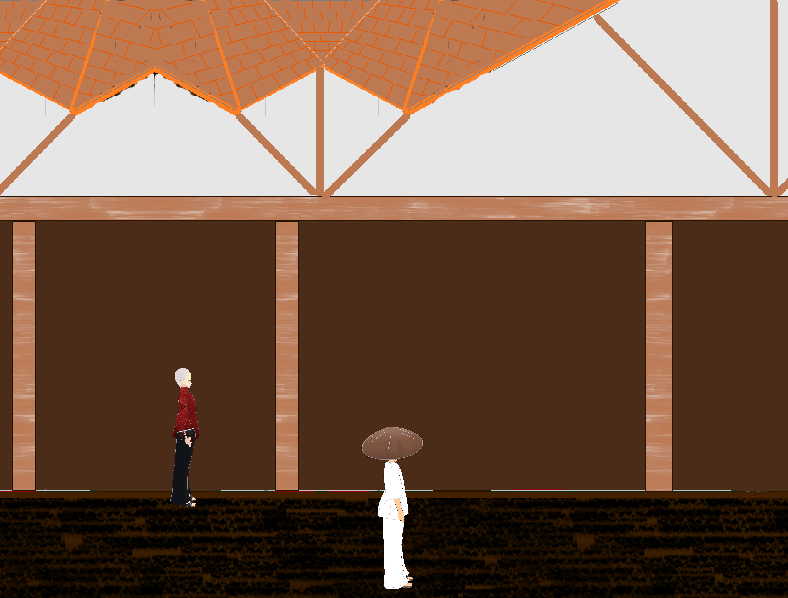 |
|
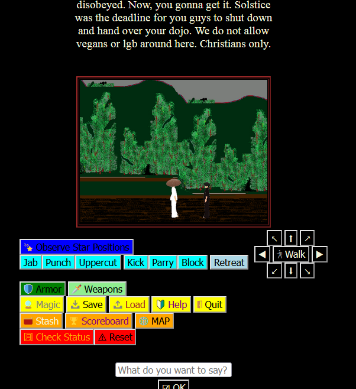 |
© Dokyo Entertainment Ltd in conjunction with FH Engineering, Crystal World, Delta College, Kagaku International and Moonshee Worldwide (c)2026